準備專案、規劃功能
建立自己的 GitHub Repository，再定義文章、留言和會員功能，拆成可以逐一完成的小任務。
課程地圖 · Overview
先完成並部署部落格第一版，再把 LINE Login 當作延伸功能接上。你不需要先會寫程式，只要跟著每一步操作、確認畫面是否符合預期。
建立自己的 GitHub Repository，再定義文章、留言和會員功能，拆成可以逐一完成的小任務。
在自己的 my-first-blog 專案中，一次完成一項功能並查看成果。
在本機確認部落格功能，推送到 GitHub，再由 Netlify 部署，取得可以分享的網址。
建立 LINE 資源，請 AI 協助串接，再用 ngrok 測試本機登入，最後設定並驗收正式環境。
完成可閱讀文章、可新增留言的網站，在本機驗收後部署到 Netlify。
再加入 LINE 會員登入，使用 ngrok 測試，設定正式 Channel 與 Netlify 環境後完成線上驗收。
你提出需求、跟著操作並驗收結果 · AI協助規劃、修改程式與解釋問題
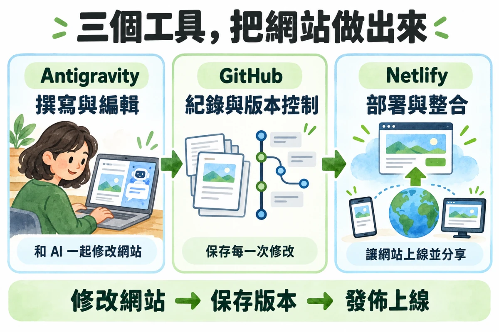
Repository（專案倉庫）是放程式檔案、記錄每次修改的地方。這裡要建立自己的新專案，和前面的 Fork 課程範例是不同的事。
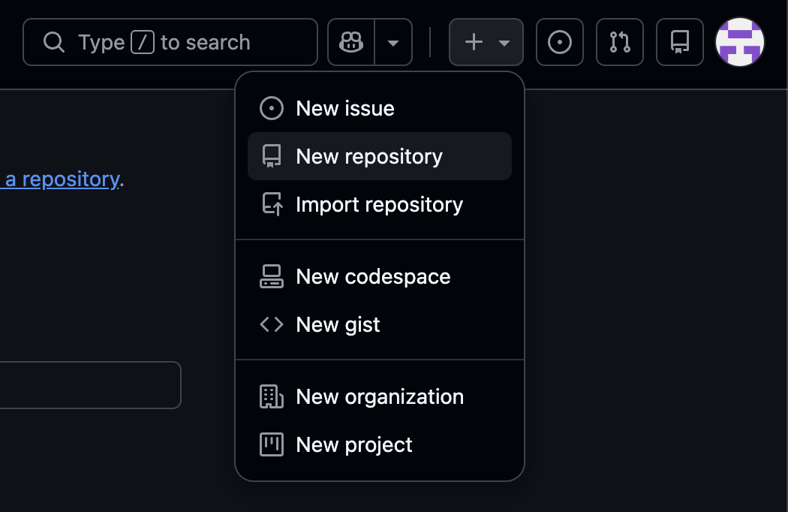
my-first-blog。my first blog（可選填）。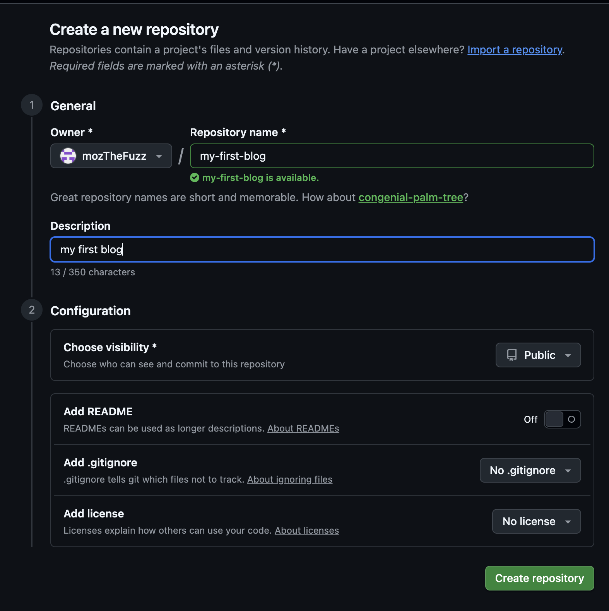
完成條件：GitHub 開啟新建好的 my-first-blog 專案頁，網址格式為 github.com/你的帳號/my-first-blog。
所有人可以閱讀文章，會員登入後可以發表留言。
從 1 到 6，由上往下做。完成一項、確認結果，再進入下一項。
每篇文章包含標題、摘要與內容；列表顯示標題與摘要。
✓ 完成條件 點擊列表中的文章，能閱讀完整內文。
加入可以編輯並儲存文章內容的編輯器。
✓ 完成條件 儲存後重新開啟文章，能看到修改結果。
每篇文章有自己的留言區，先用測試會員新增留言。
✓ 完成條件 重新整理後，仍能讀到該篇文章已保存的留言。
首次登入建立會員，再次登入找到同一位會員。
✓ 完成條件 會員不會重複建立；登出後回到未登入狀態。
未登入時提示登入，登入後才能新增留言。
✓ 完成條件 登出後再次送出留言，後端也會拒絕。
會員可以刪除自己發表的留言。
✓ 完成條件 換成另一位會員，即使直接送出刪除請求，也不能刪除別人的留言。
對照上一頁的任務編號，看看每個功能需要哪些部分一起完成。
| 對應任務 | 前端：畫面與操作 | 後端：處理規則 | 資料庫：保存資料 |
|---|---|---|---|
| 01–02 文章 | 文章列表、內容頁、編輯器 | 處理文章讀取與儲存 | 標題、摘要、內文 |
| 03 新增留言 | 留言區、輸入框、送出按鈕 | 檢查留言內容與登入身分 | 留言內容、作者、所屬文章與時間 |
| 04–05 會員與權限 | 登入／登出按鈕、提示訊息 | 確認身分，判斷是否能留言 | 會員資料 |
| 06 刪除留言 | 刪除按鈕、操作結果 | 確認是不是留言作者 | 刪除對應留言 |
前端按下按鈕 → 後端檢查權限 → 通過後更新資料庫 → 回傳結果、更新畫面。若權限不通過，拒絕操作並顯示提示。
在新的 my-first-blog 資料夾開始，跟 AI 一次完成一個任務。
my-first-blog。請放在 blog-class 旁邊，不要放進它裡面。my-first-blog。my-first-blog，開啟新的 AI 對話，再貼下方 Prompt。課前的 blog-class 留作練習紀錄；GitHub 上 Fork 的課程教材用來驗收帳號。今天的新資料夾稍後會連到你建立的 my-first-blog Repository。
工具延伸：Agent Skills 與 Claude Code（課後選讀）。
複製以下 Markdown Prompt，貼到 Antigravity 的 AI 對話：
## 給 AI 的完整需求
### 除錯與修改原則
- 遇到非預期行為，先找出根本原因並附證據，確認後再修改，不做嘗試性修改。
- 一次只做一個修改並驗證；沒效就先還原，再試下一個，不可疊加。
- 每個保留的修改都要能證明必要（拿掉會重現問題），否則移除。
- 每個任務完成時逐檔列出修改與理由，與任務無關的修改要標示。
- 不用部署設定（netlify.toml 等）繞過本機工具的問題；非改不可先問我。
### 專案起點
目前開啟的是新的空資料夾 `my-first-blog`，請在這裡建立專案。先提出技術選擇與六個任務的計畫，等我確認後才開始任務 1；開始任務 1 前，先在這個專案資料夾執行 `git init -b main`；每項驗收後等我確認，再做下一項。
請提供安裝依賴與 `npm run dev` 啟動步驟，並設定對應的 dev 指令。建立 `.gitignore` 排除 `node_modules/`、`.env` 和 `.env.*`，只允許沒有真實秘密值的 `.env.example` 作為範本。
我要實作一個可以讓會員留言的部落格功能，共有三大功能：
### 三大功能
1. **文章功能：**文章列表、文章內容頁；每篇文章有標題、摘要與內容；提供文章內文編輯器。
2. **留言功能：**閱讀留言、新增留言、刪除自己的留言。
3. **會員流程：**首次登入建立會員、登入與登出、登入後才能留言、只能刪除自己的留言。
### 部署條件
這個網站先在本地端測試，之後會部署到 Netlify。我不想串接額外服務；請選用能搭配 Netlify 的前端、後端與資料庫。
請依照以下順序，把任務詳細拆解並逐一實作。每完成一項，先說明修改內容與驗收方式；確認完成條件後再進行下一項，不要一次跳過多個任務。
### 任務 1｜文章列表與內容頁
- 每篇文章包含標題、摘要與內容；文章列表顯示標題與摘要。
- 完成條件：點擊列表中的文章，能閱讀完整內文，並能返回列表。
### 任務 2｜文章內文編輯器
- 提供編輯文章標題、摘要與內文的方式，並能儲存修改。
- 完成條件：儲存後重新開啟文章，能看到最新內容。
### 任務 3｜閱讀與新增留言
- 每篇文章有自己的留言區，能閱讀留言並新增留言。
- 完成條件：留言屬於正確文章，儲存後仍能讀取。
### 任務 4｜會員建立、登入與登出
- 首次登入時建立會員，再次登入時辨識為同一位會員；提供登出功能。
- 完成條件：會員不會重複建立，登出後登入狀態結束。
### 任務 5｜只有登入會員能留言
- 未登入使用者不能新增留言；登入會員才能留言。
- 完成條件：未登入時後端拒絕留言並提示登入，不能只靠隱藏畫面按鈕阻擋。
### 任務 6｜會員只能刪除自己的留言
- 提供刪除本人留言的功能，後端要檢查留言作者。
- 完成條件：留言作者可以刪除；其他會員即使直接送出刪除請求也會被拒絕。
### 實作原則
先檢查目前資料夾；空資料夾先依我確認的計畫建立專案，已有內容則沿用現有技術。每一項完成後，告訴我如何操作驗收；遇到不確定的設計，先提出問題，不要自行假設。請勿將密碼、金鑰等秘密寫入前端程式碼。
交給 Agent 的任務
複製這段內容，貼給你的 AI Agent 協助完成本頁目標：
請先檢查這個專案的 package.json 與資料夾結構，告訴我如何在本機啟動網站、會看到哪個網址，以及如何停止。若沒有 dev 指令，先說明原因與建議，不要擅自改部署設定或猜測架構。先在自己的電腦試做與修改，再把完成的網站部署到網路上。
my-first-blog。先依 AI 說明完成依賴安裝；若它指定 npm install，等安裝完成再繼續。npm run devhttp://localhost: 開頭），按住 Command／Ctrl 再點網址，或複製到瀏覽器開啟。Ctrl + C。完成條件：能開啟本機網址，看到自己的部落格，並完成目前任務的操作驗收。下一頁再把版本推送到 GitHub。
如果出現「missing script: dev」，代表這個專案沒有設定啟動指令；把訊息交給 AI，請它檢查專案設定並告訴你正確啟動方式。
交給 Agent 的任務
複製這段內容，貼給你的 AI Agent 協助完成本頁目標：
請先檢查目前資料夾、Git 狀態、分支、遠端 Repository，以及 .gitignore。列出準備推送的檔案，確認沒有 .env、金鑰或其他秘密；先不要 stage、commit 或 push，等我確認後再帶我完成並驗證 GitHub 上的版本。把電腦裡的 my-first-blog，連到你先前建立的同名 GitHub Repository。以下指令逐行執行，每行按 Enter。
在 Antigravity 開啟 my-first-blog，選 Terminal → New Terminal，確認終端機路徑最後是 my-first-blog。若同一個終端機正在跑網站，先按 Ctrl + C 停止。
git init -b main
git status新專案應顯示 On branch main。若 AI 已初始化 Git，先用 git branch --show-current 確認分支，後面推送時使用這個名稱。
把引號內的示範文字換成自己的名字，以及 GitHub Settings → Emails 中已驗證的信箱或 GitHub 提供的 noreply 信箱。這是修改紀錄的署名，不是登入密碼。
git config user.name "你的名字"
git config user.email "你的 GitHub 提交信箱"確認專案中的 .gitignore 包含以下規則；已有其他規則時保留它們：
node_modules/
.env
.env.*
!.env.example.env.example 只能放欄位名稱與示範值。接著檢查這次要提交的檔案：
git add .
git diff --cached --name-only清單應是網站程式檔案；若看見 .env、真實金鑰檔或 node_modules，先停下來請 AI／講師協助排除，確認後再提交。
git commit -m "完成第一版"開啟自己的 my-first-blog Repository，從 Quick setup → HTTPS 複製網址。若已有檔案，從 Code → HTTPS 複製。將下面整段範例網址替換成自己的：
git remote add origin https://github.com/YOUR-USERNAME/my-first-blog.git
git remote -v成功時會顯示 origin，以及自己的 my-first-blog.git 網址。若出現 remote origin already exists，先用 git remote -v 查看；網址正確就跳過新增，不正確請講師協助確認。
git push -u origin main若分支名稱不是 main，換成第 1 步確認的名稱。若出現登入視窗，選瀏覽器登入，確認是自己的 GitHub 帳號並完成授權，再回到終端機。
瀏覽器已登入 GitHub，不代表終端機也已授權。可以用 GitHub CLI 完成瀏覽器授權：
gh --version，確認顯示版本，再輸入：gh auth login依序選 GitHub.com → HTTPS → 同意讓 Git 使用這次授權 → Login with a web browser，依提示在瀏覽器完成驗證，再執行：
gh auth setup-git
git push -u origin main不要把 GitHub 帳號密碼當成 Git HTTPS 密碼輸入。GitHub：終端機授權說明。
重新整理自己的 Repository，應看到網站檔案與剛才的「完成第一版」提交紀錄。確認成功後，才進入下一頁連接 Netlify。
先核對 git remote -v 的帳號、專案名稱與自己的登入帳號。若出現 rejected 或 fetch first，遠端可能已有其他提交；保留錯誤畫面請講師協助整合，不要強制推送。
git add .
git diff --cached --name-only
git commit -m "說明這次修改"
git push把 GitHub Repository 交給 Netlify，之後推送新版本，就能自動重新部署網站。
登入 Netlify，在專案頁點 Add new project。
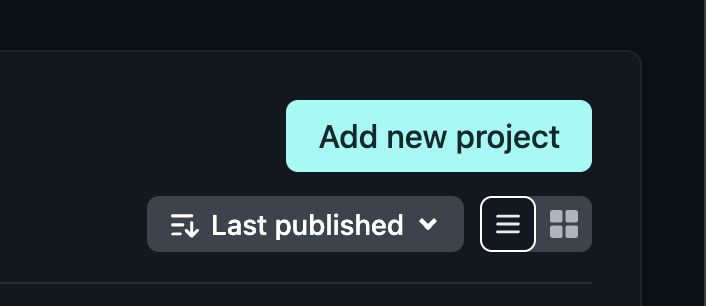
在新增專案方式中，選 Import a Git repository，再選 GitHub。
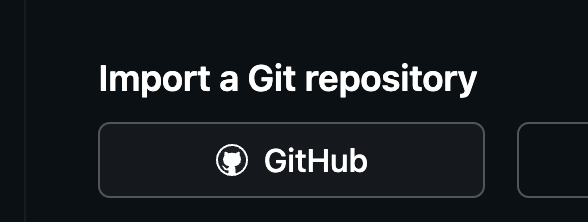
確認選對自己的 GitHub Owner，在搜尋欄輸入 my-first-blog，再點選該 Repository。
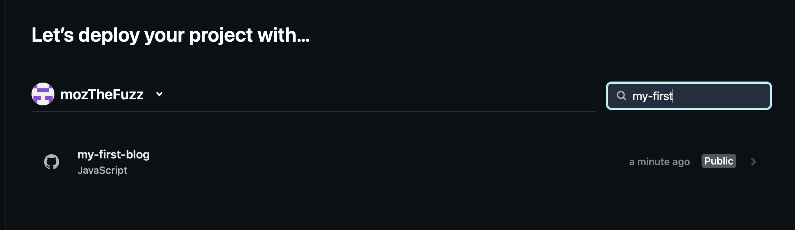
main，若你的程式放在其他分支，就選該分支。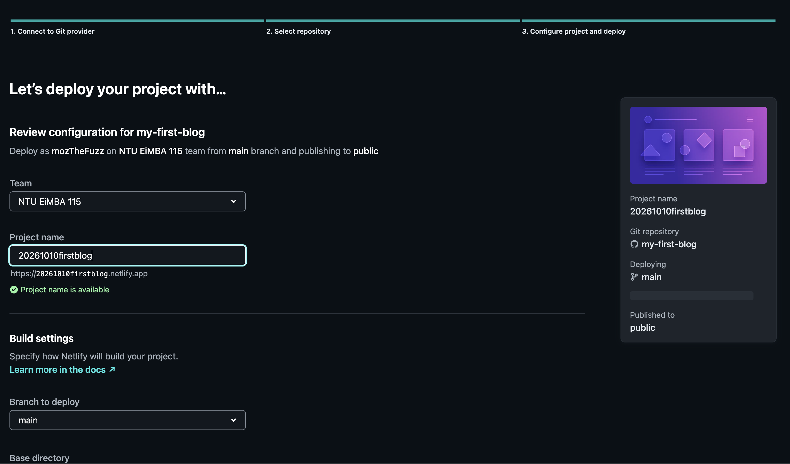
Netlify 會顯示建置或部署進度。等待狀態變成成功，再點專案提供的網站網址，確認頁面能正常開啟。
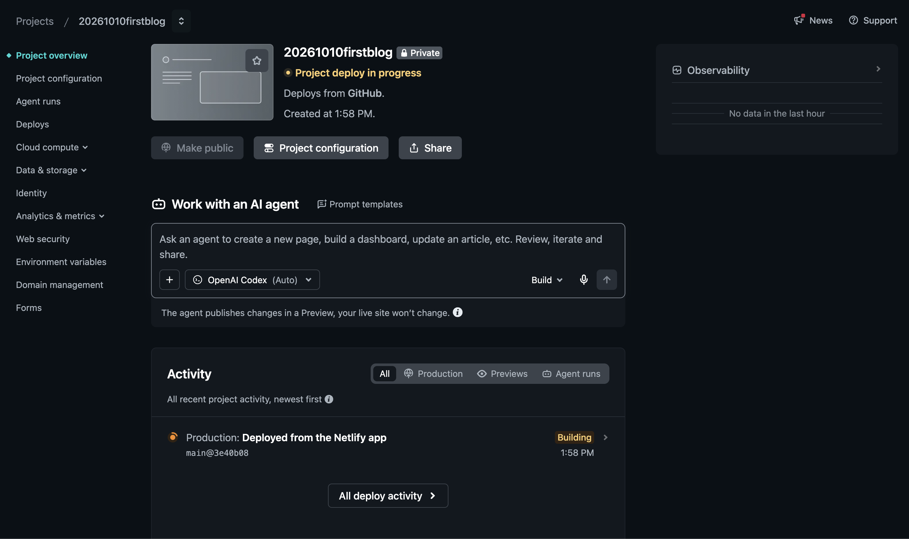
在電腦修改程式，提交並推送到已連接的 GitHub 分支。Netlify 會依專案設定重新部署，完成後用同一個網址查看新版。
確認 Repository 裡已有網站程式碼，且 Build settings 指向正確的建置方式與輸出資料夾。若部署失敗，打開 Deploys 查看錯誤紀錄，截圖請講師協助。
完成條件：Netlify 已連接自己的 my-first-blog Repository，部署成功，並能開啟網站網址。
照這四步，從建立 LINE 資源一路做到正式網站驗收。
建立 Provider 和測試用 LINE Login Channel；下一頁跟著截圖操作。
讓 AI 檢查現有專案、規劃登入與 Callback 流程，並說明需要哪些環境變數。
先確認 ngrok 網址能開啟本機網站；下一頁再設定 Callback URL 並登入驗證。
推送到 GitHub，由 Netlify 部署；設定正式環境後，再測一次登入與留言。
順序提示：先建立資源再改程式；本機測試通過後，才部署到正式網址。
先在 LINE Developers 建立 Provider 和 LINE Login Channel，為課堂測試準備專用設定。
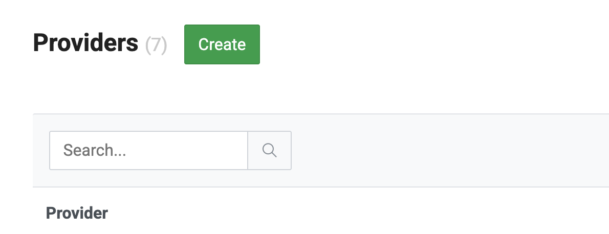
my-first-blog-test。服務地區選 Taiwan，再填寫必要的服務提供者國家／地區等欄位並建立。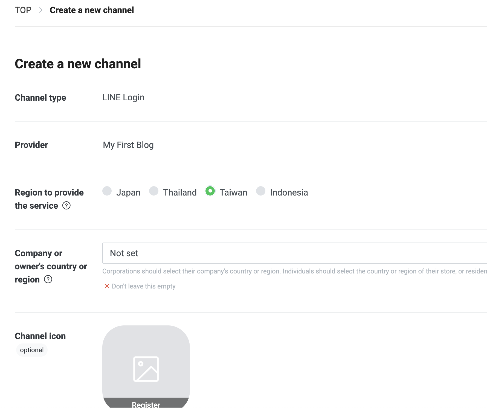
my-first-blog-test。完成條件：Provider 中看得到名為 my-first-blog-test 的 LINE Login Channel。
LINE Login Channel 建立後，再請 AI 把 LINE 登入接進現有的會員留言網站。
複製以下 Markdown Prompt，貼給 AI：
## 交給 AI 的需求
請先檢查目前專案的架構與登入流程，再把會員登入串接 LINE Login。
列出需要的 Channel 設定、環境變數名稱與修改檔案；不要猜測路徑或框架。
### 環境變數
LINE 環境變數有兩個，確保兩個環境變數的命名為：
- `LINE_CHANNEL_ID`
- `LINE_CHANNEL_SECRET`
### Callback 規格
- Callback 路徑固定為 `/api/auth/line/callback`。
- Callback 完整網址必須由每次請求的來源自動組成（`<scheme>://<host>/api/auth/line/callback`），不可寫死 hostname，也不可用環境變數指定 hostname。
- 經過 ngrok 或其他反向代理時，要讀取 `X-Forwarded-Proto` 與 `X-Forwarded-Host`，還原瀏覽器實際看到的網址。
- 以 localhost、ngrok、正式站三種來源各驗證一次送給 LINE 的 `redirect_uri`，把三個結果列給我。ngrok 可用 `curl` 加代理標頭模擬；並確認登入導向網址中的 `redirect_uri` 正確。
- 說明哪些網址需要登錄在 LINE Developers Console 的 Callback URL，以及為什麼程式無法省略這一步。
### 安全要求
- Channel secret 不可出現在前端、程式碼、聊天訊息或任何會提交到 Git 的檔案。
- 告訴我如何在本機用 `.env` 安全設定，並確認 `.env` 已被 `.gitignore` 排除。
### 會員與權限
- 首次登入建立會員，再次登入找到同一位會員，以 LINE 使用者 id 為依據。
- 登入後才能留言，且只能刪除自己的留言；這兩項都要在後端檢查，不能只靠隱藏畫面按鈕。
### 除錯與修改原則
- 遇到非預期行為，先找出根本原因並附證據，確認後再修改，不做嘗試性修改。
- 一次只做一個修改並驗證；沒效就先還原，再試下一個，不可疊加。
- 每個保留的修改都要能證明必要，否則移除。
- 完成時逐檔列出修改與理由，與任務無關的修改要特別標示。
- 不用部署設定（`netlify.toml` 等）繞過本機工具的問題；非改不可先問我。從 LINE Developers 的 Channel 設定取得 Channel ID 與 Channel secret。secret 是密碼，只放在伺服器環境變數。
請 AI 先說明預計修改哪些檔案及原因，再逐步修改。遇到錯誤時，提供重現步驟與錯誤畫面，不要一次堆疊多個修正。
完成條件：網站出現 LINE 登入入口，AI 已說明本機啟動方式、Callback 路徑和所需環境變數。
localhost 只在自己的電腦上連得到。LINE Login 完成後，瀏覽器需要回到網站上登記的 Callback URL；外部無法直接開啟你電腦裡的 localhost。
ngrok 會提供一個暫時的公開 HTTPS 網址，再把送到這個網址的請求轉送到你電腦上的網站。這樣登入流程就能回到本機開發中的網站測試。
使用者瀏覽器 → LINE Login → 登入後返回 ngrok HTTPS Callback 網址 → ngrok 轉送到 localhost → 本機網站處理登入並回傳結果。
測試時要同時保持本機網站與 ngrok 執行中。ngrok 網址通常是暫時的，網址變更後要更新 LINE Developers Console 裡的 Callback URL。
在 Antigravity 開啟 my-first-blog。依 AI 說明，在專案的 .env 填入 my-first-blog-test Channel 的值：
LINE_CHANNEL_ID=填入測試Channel的ID
LINE_CHANNEL_SECRET=填入同一個測試Channel的Secret確認 .env 已被 .gitignore 排除；值只在自己的編輯器填入。若專案另需 SESSION_SECRET，依 AI 說明在本機產生並設定。
幫我重新啟動本地端的 dev 環境。啟用後，開啟一個 ngrok http 指向剛剛的 dev 環境。
把 ngrok 的最終網址告訴我。這一頁只確認一件事：透過 ngrok 的 HTTPS 網址，能開啟你電腦上的部落格。
在 Antigravity 開啟 my-first-blog。依 AI 說明，在專案的 .env 填入 my-first-blog-test Channel 的值：
LINE_CHANNEL_ID=填入測試Channel的ID
LINE_CHANNEL_SECRET=填入同一個測試Channel的Secret確認 .env 已被 .gitignore 排除；值只在自己的編輯器填入。若專案另需 SESSION_SECRET，依 AI 說明在本機產生並設定。
在 my-first-blog 的終端機執行：
npm run dev等畫面顯示本機網址，先開啟確認網站能顯示。記下連接埠（網址冒號後的數字），並保持終端機 A 開啟。
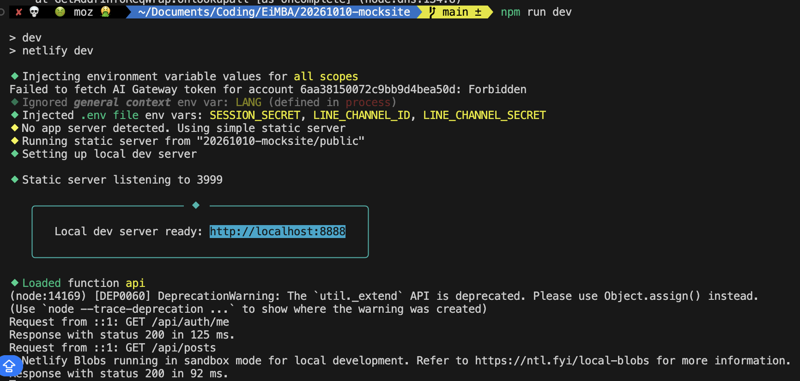
localhost:8888 只是範例。另開一個終端機，稱為終端機 B。依 ngrok 官方教學選擇自己的作業系統安裝。首次使用時，從 ngrok 管理頁取得 Authtoken，替換下方佔位文字後執行：
ngrok config add-authtoken <你的 ngrok Authtoken>
ngrok http <終端機 A 顯示的連接埠>例如本機網址為 http://localhost:8888，第二行就是 ngrok http 8888。Authtoken 只在自己的終端機輸入，不貼到 AI 對話。
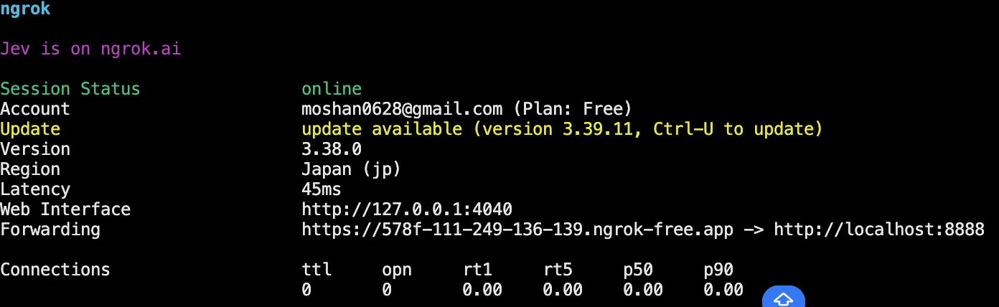
複製終端機 B 的 Forwarding HTTPS 網址，貼到瀏覽器；若出現 ngrok 的訪問提示，確認是自己的網址後繼續。應看到和本機相同的部落格。
如果 HTTPS 網址打不開，先確認本機網站仍在執行，以及 ngrok 使用的連接埠與終端機 A 相同。
沿用上一頁的 ngrok HTTPS 網址，讓 LINE 登入後能回到你的本機網站。兩個終端機都要保持開啟。
進入 LINE Developers Console，開啟 my-first-blog-test，確認這個 Channel 的 ID 與本機 LINE_CHANNEL_ID 相同，再進入 LINE Login 分頁並啟用 Web app。
Callback URL 是 LINE 完成登入後返回網站的地址。按 Edit，將「這次 ngrok HTTPS 網址」加上固定的 /api/auth/line/callback，儲存設定：
https://你的ngrok網域/api/auth/line/callback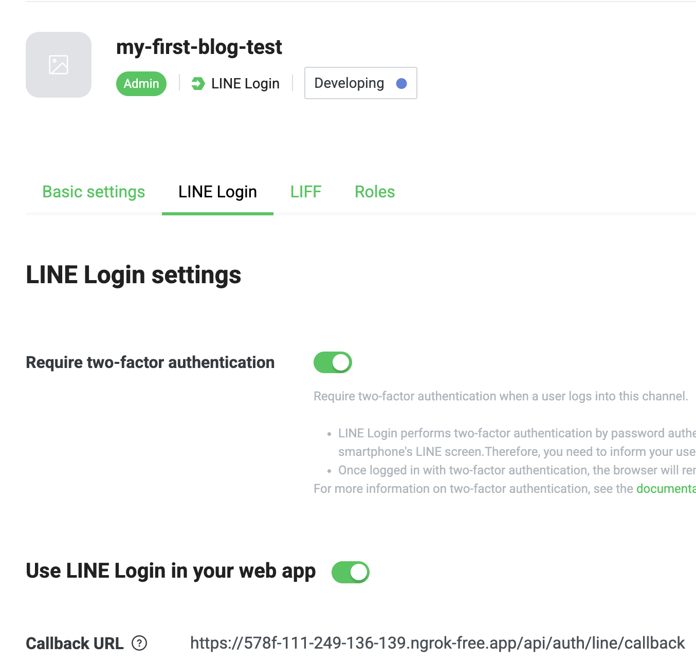
/api/auth/line/callback 結尾。ngrok 網域更換時，記得同步更新這個網址。使用自己的完整網址。只替換網域，保留 /api/auth/line/callback；ngrok 網址改變時，也要更新此處。LINE：設定 Callback URL。
回到瀏覽器，開啟 ngrok 的網站首頁，按 LINE 登入並同意授權。確認完成後返回同一個 ngrok 網域上的部落格，而不是停在 LINE 或錯誤頁面。
若失敗，先核對測試 Channel、Callback 完整網址、兩個終端機是否仍在執行。修改 .env 後，在終端機 A 按 Ctrl + C，再執行 npm run dev。仍失敗時提供錯誤畫面與操作步驟給講師，遮住秘密值。
本機 LINE Login 測試通過後，再把設定移到 Netlify 正式網站。先對照下面的表格，確認每個值屬於哪一個環境。
| 設定項目 | 本機測試 | 正式環境 |
|---|---|---|
| LINE Login Channel | my-first-blog-test | my-first-blog-production |
| 開啟網站的網址 | 本機網站透過當次 ngrok HTTPS 網址存取 | Netlify 正式網址或已設定的正式網域 |
| Callback URL | https://你的ngrok網域/api/auth/line/callback | https://你的正式網域/api/auth/line/callback |
LINE_CHANNEL_ID | 測試 Channel 的 ID | 正式 Channel 的 ID |
LINE_CHANNEL_SECRET | 同一個測試 Channel 的 secret | 同一個正式 Channel 的 secret |
| 環境變數放在哪裡？ | 本機 my-first-blog/.env，不提交 Git | Netlify → Environment variables → Production |
| 修改設定後 | 重新啟動 npm run dev | 重新部署 Netlify |
兩邊使用相同的變數名稱與 Callback 路徑；Channel 的值和網址分開設定。若專案有 SESSION_SECRET，正式環境也要另外設定。
my-first-blog-production 作為範例。https://你的正式網域/api/auth/line/callback。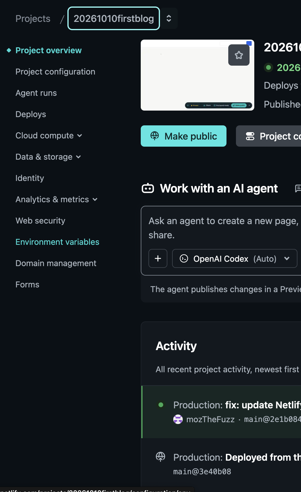
LINE_CHANNEL_ID，將 Production 的值設為正式 LINE Login Channel 的 Channel ID。LINE_CHANNEL_SECRET，將 Production 的值設為同一個正式 Channel 的 Channel secret；勾選 Contains secret values。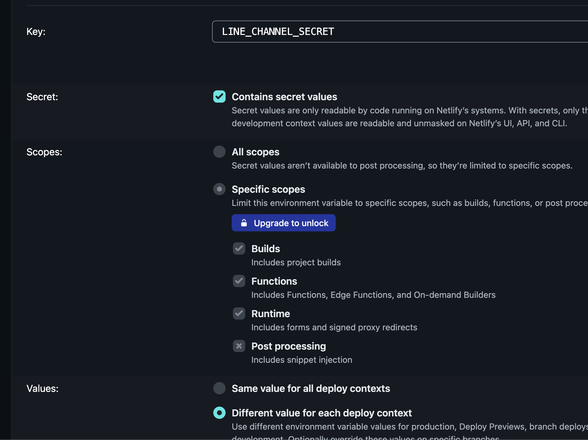
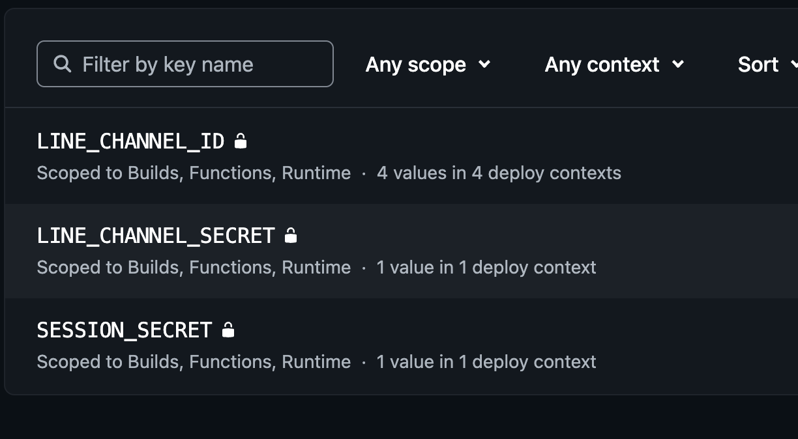
LINE_CHANNEL_ID 和 LINE_CHANNEL_SECRET；清單只顯示名稱，不會顯示秘密值。Netlify 環境變數更新後需要重新部署才會套用。Netlify Environment variables 官方說明
提交並推送已完成 LINE Login 整合的程式碼到 Netlify 連接的 Repository 與分支。推送後等待 Netlify 部署完成，再開啟正式網站網址。
先在專案根目錄打開 .gitignore，確認有以下一行；沒有就加上，其他規則保留：
.env在終端機確認 Git 會忽略這個檔案：
git check-ignore -v .env完成條件：指令顯示 .gitignore 中的規則符合 .env。
git add .
git commit -m "Connect production LINE Login"
git push origin <部署分支名稱>第 4 項測試通過後，再進行正式發佈。Channel secret 僅保存在 Netlify 環境變數，不提交到 GitHub。
再次確認這是正式環境專用的 LINE Login Channel，正式 Callback URL 和 Netlify 環境變數都已設定，測試也已通過，再將 Channel 狀態從 Developing 改為 Published。
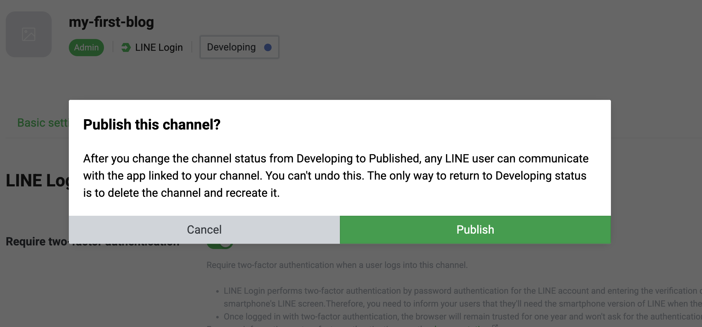
確認部署的是正式版本、網站網址正確，再按 Make public，讓使用者可以透過正式網址開啟網站。
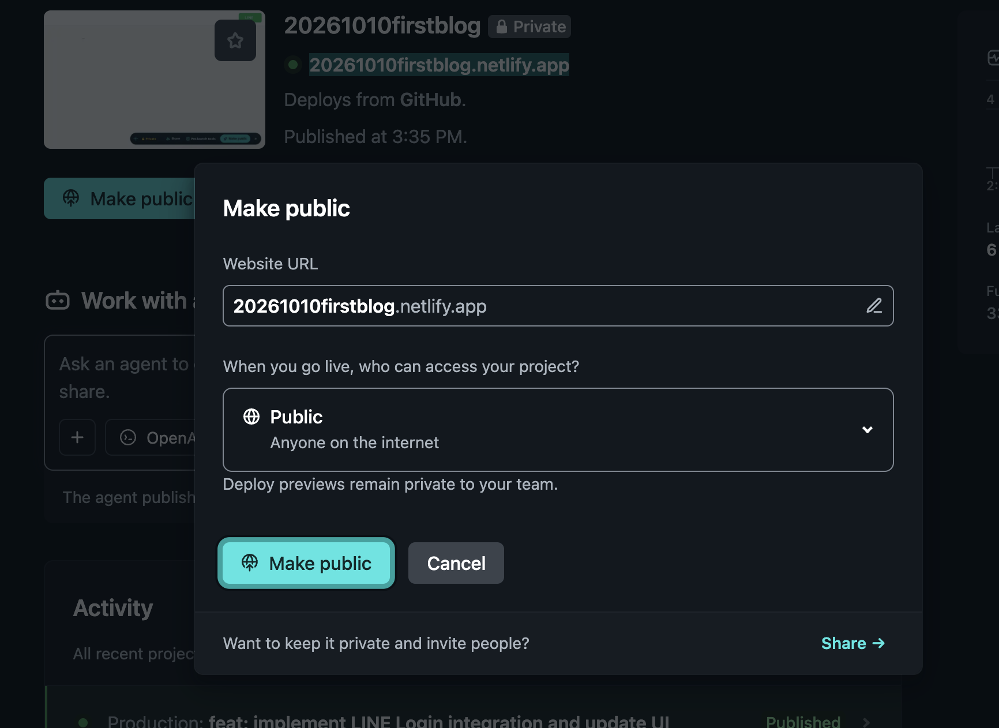
完成條件：正式 LINE Login Channel 已 Published，Netlify 網站已公開，正式網址的登入與留言測試都通過。
從規劃、在本機開發與測試，到推送程式碼並由 Netlify 部署。
【Developer｜開發與本機測試】規劃 → 寫 Code → npm run dev ↔ ngrok local ↔ LINE Login test。若測試需要修改，回到寫 Code；測試通過後 git push to remote → Netlify deployment →【User｜正式環境使用者】透過正式網站使用 LINE Login。
這是一個教學原型，不是可以直接承受真實營運的產品。
先想應用場景：誰會使用？要解決什麼問題？最重要的流程是什麼？想清楚目的，再決定要做什麼。
架構影響後續修改的難易。可以繼續學習：
SOLID 原則
Clean Architecture
Domain-Driven Design（DDD）
使用人數、資料量或查詢複雜度增加時，重新評估資料模型、效能、備份與維護需求，再考慮 PostgreSQL 或 MongoDB 等資料庫。
先決定服務中斷能接受多久、需要多少備援，再比較方案。Serverless 能減少伺服器管理工作，但仍需評估服務限制、成本與監控。
把建置、測試和部署流程自動化，讓每次修改都能重複檢查。